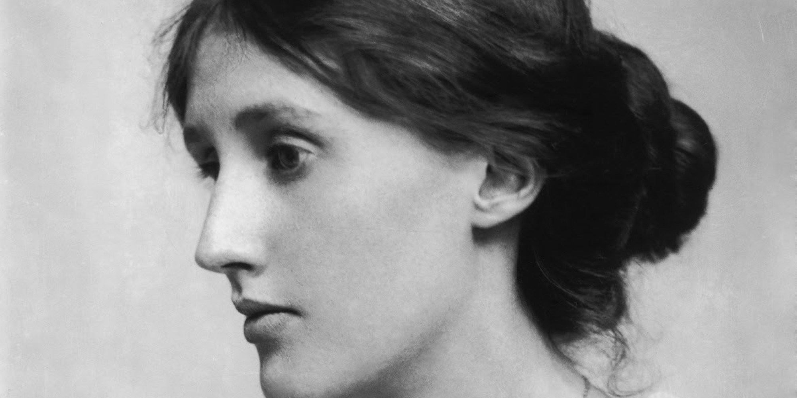

Virginia Woolf
“There was a star riding through clouds one night, & I said to the star, 'Consume me'.”

Virginia Stephen photographed by George Beresford in July 1902
Abridged Timeline of Woolf's life
- 1882 - Born in Kensington, England.
- 1895 - Woolf's mother suddenly died
- 1897 - Woolf's half-sister suddenly died, leading to the first of Woolf's nervous breakdowns
- 1897 to 1901 - Studied Ancient Greek, Latin, German, and History at the Ladies' Department of King's College London.
- 1904 - Woolf's father died, provoking another nervous breakdown. This led to Woolf being institutionalised
- 1904 - Woolf's first published piece of writing appears in the Guardian. It is an account of a visit to the home of the Brontë family
- 1912 - Married the writer Leonard Woolf
- 1915 - Woolf's first novel, The Voyage Out, is published by Gerald Duckworth and Company Ltd
- 1917 - Founded Hogarth press along with her Husband. This press later published works by T. S. Eliot, Lauren van der Post and Woolf's own writings.
- 1922 - Met the writer and gardeners Vita Sackville-West with whom Woolf began a sexual relationship
- 1925 - Mrs Dalloway is published
- 1927 - To the Lighthouse is published
- 1928 - Presented Sackville-West with the book Orlando, which was dedicated to her
- 1931 - The Waves is published, it is a prose poem focused around the lives of six acquaintances.
- 1933 - Flush: A Biography is published. It is a fictionalised biography of a cocker spaniel owned by Victorian poet Elizabeth Barrett Browning.
- 1941 - Woolf's final work, Between the Acts, is published.
- 1941 - After a deep depression, likely caused by the onset of war, Woolf filled her pockets with stones and walked into the river Ouse.
If you have time, consider reading further here, or maybe read one of her books.